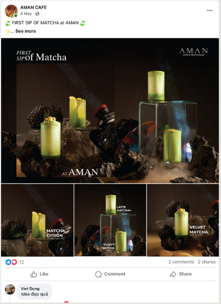
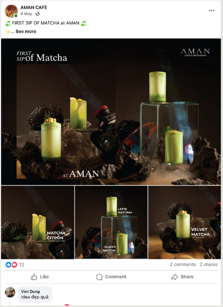

Project #1
AMAN CAFE
A Long-Term JourneyAMAN CAFE is a project I have been closely involved with since 2020 - from its very first days on the market until now. Over more than 4 years, the brand has gone through two major rebrandings, evolving from "Aman Cafe - make you happy" to "Aman Cafe - Halong Base", marking a new stage of growth rooted in the memories and culture of Ha Long.
My role covered brand strategy, visual & content direction, menu development, communication, and community events, helping AMAN become not just a café, but truly a "second home" for its customers.
 
